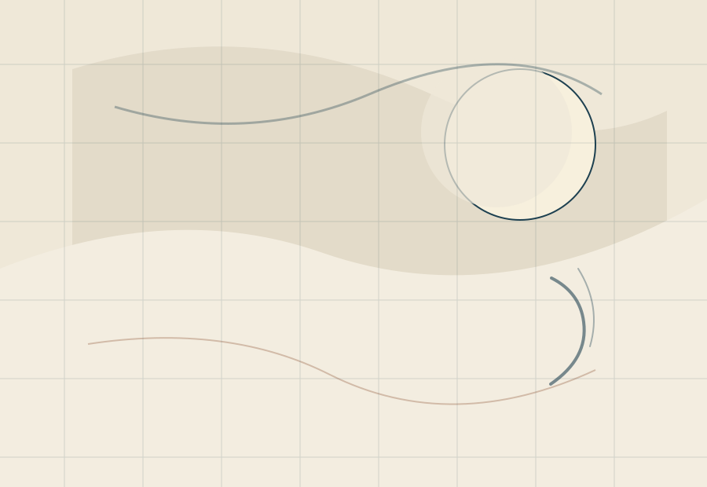

CHIKAGE / TRPG
PLAY. RECORD. REMEMBER.
物語を探し、卓を立て、予定を決めて、終わった時間まで残す。千景のTRPGは、遊ぶ前後の気配も含めてひとつの場所にする。

MY SESSIONS
次の卓から、今日を見る。
HOUSE RULES
今回の卓で使う規則を、迷わない形へ。
SCENARIO LIBRARY
千景の書架。
検索は今のまま壊さない。v2では、条件を入れる前に棚を眺められる余白を足していく。
TRPG TOOLS
使える道具は、静かに強く。
TOOL PREVIEW
条件を選び、卓へ渡す。CHIKAGE BOT